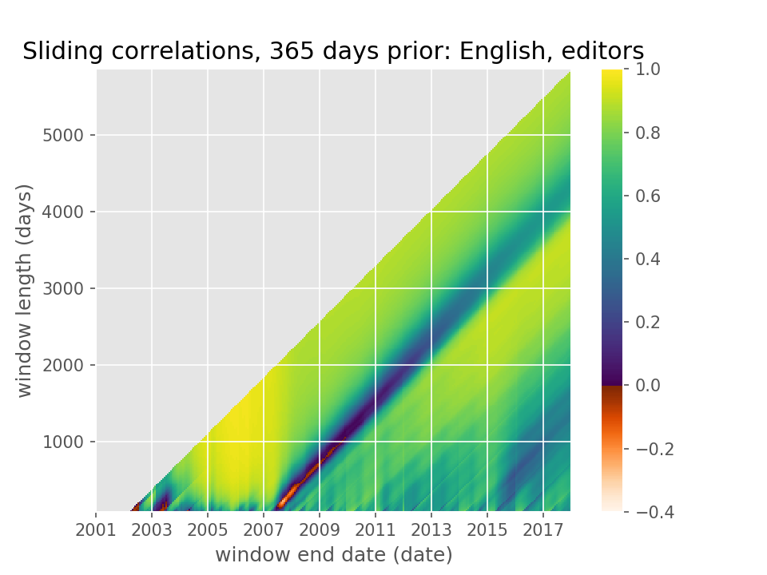

Entry 2¶
English Wikipedia, daily editors: sliding-window 365-day auto-correlation¶
Ahmed Fasih
Consider the number of editors logging into English Wikipedia every day from 2001 to 2017. One way to predict the number of editors active tomorrow is to look at how many logged in a year ago (or a month ago, or week ago, or …).
Auto-correlation is a great way to see the temporal cyclicities in a time series like this, that is, the statistical relationship between the number of users logging in each day versus some days ago. But usually when we think about auto-correlation, say for a year lag, we think about a single number, between +1 and -1, that quantifies the strength of the linear relationship between the data and its values a year ago.
I was curious if the annual-lag auto-correlation varied over time: if I looked at different subsets of data, how different would the yearly auto-correlation be? In effect, I wanted to explode a scalar yearly auto-correlation to a two-dimensional array, applying the auto-correlation function over multiple sliding windows.
This heatmap is the result. With it, I can ask questions like, what is the correlation between the daily editors count for the last three months of 2015 and the year before? Or for three years ending in June 2009? (Note how in the former, the two subsets of data don’t overlap in time but in the latter case, they do.)
This gives a brand new way to visualize the different epochs of Wikipedia’s “rise and decline”. During the exponential-growth era of 2003 to 2007, the daily editors count was very highly correlated with that of a year ago: this is the bright-yellow triangular patch in the bottom left.
Then in mid-2007, the editor engagement on English Wikipedia (and several other Wikipedias) peaked and began a steady decline. That “Peak Wiki” event shows up as a dark gash of low and anti-correlation. Any timeframe that includes “Peak Wiki” will include days where editor counts are uncorrelated (or negatively corelated) with those of a year away.
Since then, over time horizons of years, the annual auto-correlation wanders up and down. Daily editor counts are somewhat correlated with those of a year away.
More recently, since 2015, the steady decline in editors reversed and has been trending gently up. The first indication of this that I found came from the slightly dark column of lower auto-correlation in 2015 and extending diagonally away from it.
The conclusion I draw from this heatmap is that varying the temporal window one uses to evaluate an auto-correlation can tell many stories about the underlying time series, many more than a single scalar that we often find.
Code and data: 1